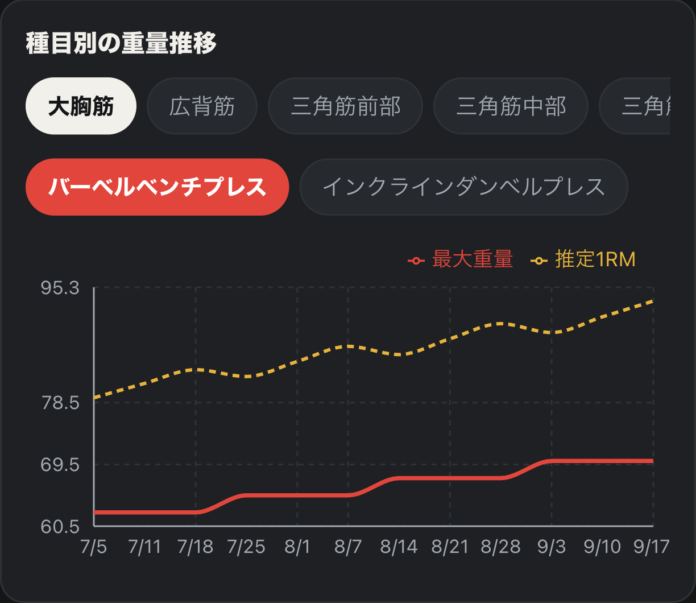
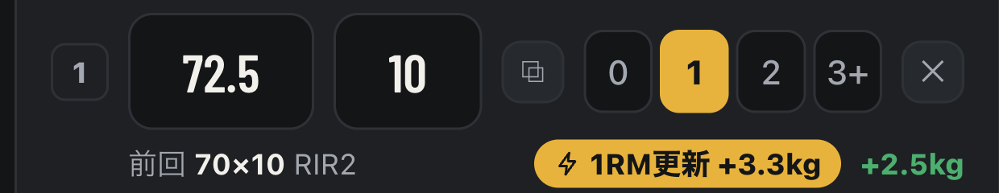
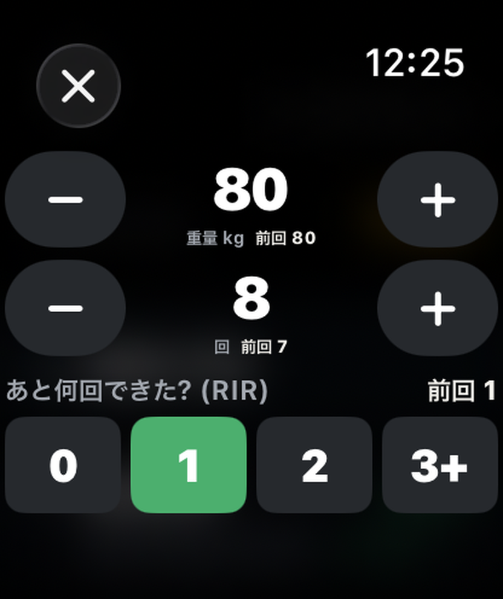
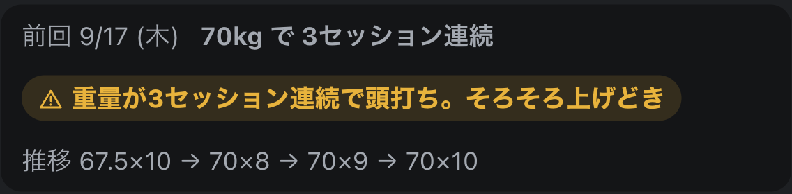

最初の10回は、
全部無料。
買い切り・サブスクなし・登録なし
KURABELL
プロフィールのリンクから
5 / 5
プログレッシブオーバーロード(漸進性過負荷)

1 / 5 →
重量・回数・余力まで、前回と比べる。

2 / 5 →
Apple Watch で −/+ を押すだけ。
iPhone で始めると、自動で開く。

3 / 5 →
上げるかどうかを決めるのは、あなた。

同じ重量が3回続き、回数も落ちていないときに表示。
記録が教えてくれるのは、事実だけ。
4 / 5 →
買い切り・サブスクなし・登録なし
5 / 5